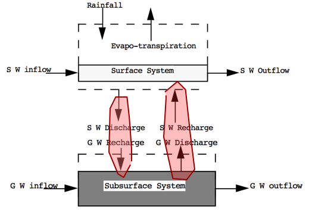
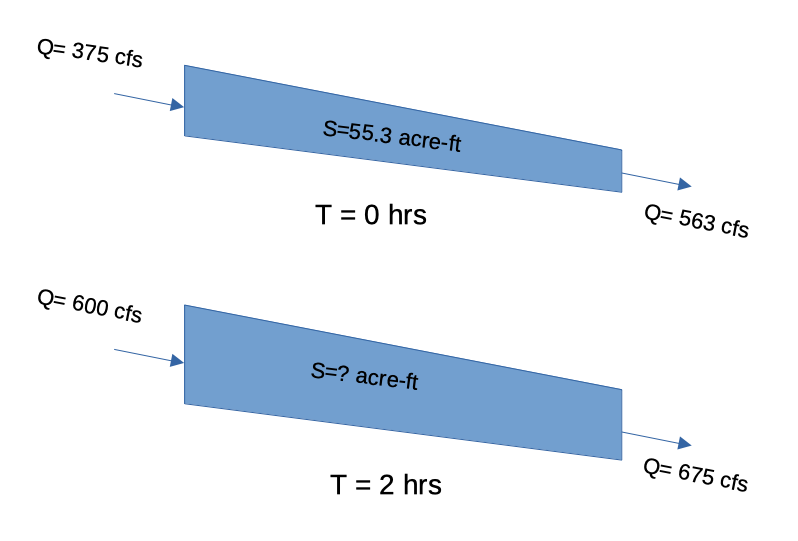

2. Hydrologic Cycle¶
Course Website
Reading(s)¶
Chow, V.T., Maidment, D.R., Mays, L.W., 1988, Applied Hydrology: New York, McGraw-Hill. pp. 1-12
Brutsaert, W. 2005. Hydrology : An Introduction (8th printing), Cambridge University Press. NewYork.
Hydrology “Definitions”
Water Budget
Groundwater
Hydrologic Cycle¶
The water, or hydrologic, cycle describes the journey of water as water molecules make their way from the Earth’s surface to the atmosphere and back again, in some cases to below the surface. This gigantic system, powered by energy from the Sun, is a continuous exchange of moisture between the oceans, the atmosphere, and the land. A typical diagram depicting the hydrologic cycle is shown below.

The driving force for the cycle is solar energy that provides the energy to vaporize liquid water that then rises into clouds, moves onshore, and rains (or snow, sleet, \(\dots\). and other forms of precipitation) A portion of the rain becomes runoff, another portion returns to the atmosphere as evaporation, another portion infiltrates into the ground and becomes groundwater.
A more detailed accounting of the precipitation is as follows:
A portion known as interception is retained on buildings, vegetation, and other surfaces that eventually evaporates - the remaining quantity is called effective precipitation
Note
Excess precipitation is a similar concept. When discussing rainfall-runoff processes using some model (i.e. unit hydrograph methods), the quantity that becomes runoff is called excess precipitation. The terms are frequently used interchangeably.
Some of the effective precipitation also evaporates directly.
Another portion of effective precipitation infiltrates into the ground - a portion of infiltrated water returns to the atmosphere via transpiration, the remainder either percolates deeper into the ground or is incorporated in the vegetative biomass.
The water that percolates deeper into the ground becomes recharge to the groundwater system, and may appear at some point as baseflow in streams.
If the precipitation exceeds the combined evaporation and infiltration puddles form in small depressions on the land surface - this is called depression storage.
After the depressions are filled they join and a continuous film of water can begin to flow over the surface to a stream channel. This portion that can flow is called the excess precipitation (see the note above), and the flow is called the direct runoff.
Runoff occurs when the film of water begins to move - water in this film is said to be in detention storage, and evaporation occurs from this compartment too. When precipitation ceases, the water in detention storage eventually joins the stream channel.
The destination of all streams is open bodies of water such as lakes, seas, and oceans which are subject to substantial evaporation.
The evaporation and tanspiration from all these sources combine and carry moisture back into the atmosphere which condenses and repeats the cycle.
The surface water system would be the part of the diagram that lies above the plane defined by the ocean and infiltration line. The subsurface system is the part that is below this plane.
Expressed as a simple system diagram it would be depicted in the figure below

The water cycle, also called the hydrologic cycle, refers to the pathway of water in nature, as it moves in its different phases through the atmosphere, down over and through the land, to the ocean and back up to the atmosphere. When atmospheric water vapor condenses and precipitates over land, initially it moistens the surface and some amount of it is stored as interception, which later evaporates. As precipitation (and in a similar way snowmelt) continues, part of it may flow over the surface in the form of overland flow or surface runoff, and part of it may enter into the soil as infiltration. This surface runoff soon tends to collect locally, either in puddles or small ponds as depression storage, or in gullies or larger channels where it continues as streamflow, which ultimately ends up in a larger water body, such as a lake or the ocean. Streamflow is normally described by a hydrograph, that is the rate of flow at a gaging station as a function of time. The infiltrated water may flow rapidly through the near-surface soil layers to exit into springs or adjacent streams, or it may percolate more slowly through the profile to join the groundwater, which sooner or later seeps out into the natural river system, lakes and other open water bodies; part of the infiltrated water is retained in the soil profile by capillarity and other factors, where it is available for uptake by the roots of vegetation.
Soil layers and other geologic formations, whose pores and interstices can transmit water, are called aquifers. When an aquifer is in direct contact with the land surface, it is referred to as unconfined. The locus of points in an unconfined aquifer, where the water pressure is atmospheric, is called the water table. Although the water table is not a true free surface separating a saturated zone from a dry zone, it is sometimes assumed to be the upper boundary of the groundwater in an unconfined aquifer. The partly saturated zone in an unconfined aquifer, between the water table and the ground surface, is sometimes referred to as the vadose zone. In an unconfined aquifer, the term groundwater refers usually to the water found below the water table; soil water or soil moisture refers to the water above the water table. A water bearing geologic formation, that is separated from the surface by an impermeable layer, is referred to as a confined aquifer. Streamflow is fed both by surface runoff and by subsurface flow from riparian (i.e. located along the banks) aquifers. The streamflow, resulting from groundwater outflow is often called base flow; in the absence of storm flow or storm runoff caused by precipitation, base flow is also referred to as drought flow or fair weather flow.
Finally, the hydrologic cycle is closed by evaporation, which returns the water, while in transit in the different flow paths and stages of storage along the way, back into the atmosphere. When evaporation takes place through the stomates of vegetation, it can be referred to as transpiration. Direct evaporation from open water or soil surfaces and transpiration of biological water from plants are not easy to separate; therefore the combined process is sometimes called evapotranspiration. Evaporation of ice is commonly referred to as sublimation. While these distinctions are useful at times, the term evaporation is usually adequate to describe all processes of vaporization.
Brutsaert, Wilfried. Hydrology . Cambridge University Press. Kindle Edition.
Hydrologic Balance:¶
The water budget, or hydrologic balance is simply the expression of the conservation of mass in hydrologic terms for a hydrologic system. Generally it is expressed as a rate (or volume) balance.
The hydrologic balance is the fundamental tool in hydrology to describe amounts of water in storage in different compartments at different scales.
The equation expressed in “words” is
Rate of inflow - Rate of outflow = Rate of change of storage + Rate of internal mass generation.
Symbolically it is exrepssed as: $\( \frac{dI}{dt} - \frac{dO}{dt} = \frac{dS}{dt} + \frac{dG}{dt}\)\(<br> where \)I\( is inflow volume, \)O\( is outflow volume, \)S\( is storage volume (i.e. within a watershed), and \)G\( is generated volume. \)G\( is generally zero, but is included to be consistent with the balance equations you have learned elsewhere (i.e. environmental engineering, chemistry, \)\dots$)
Surface Hydrologic System
Here is the surface water system broken into its own sub-system.

Notice the dashed line is the boundary – exactly like a control volume in fluids.
Surface Water Budget
From the surface water system diagram, appropriate budget components are:
Inflows: Rainfall; Surface water from outside boundary, recharge from Groundwater.
Outflows: Evapotranspiration; Surface water leaving boundary; Infiltration to groundwater.
Storage: Water levels in lakes, rivers, ponds within the boundary; water stored on leaves and other surfaces.
Sub-surface Hydrologic System
Here is the sub-surface water system broken into its own sub-system.

Notice the dashed line is the boundary – exactly like a control volume in fluids.
Sub-surface Water Budget
From the sub-surface water system diagram, appropriate budget components are:
Inflows: Groundwater flow from outside boundary; Recharge from surface system (via infiltration)
Outflows: Groundwater flow out of the boundary; Discharge (pumping; springs) to surface system
Storage: Water levels in aquifers within the boundary
Combined Hydrologic System Here are the two systems “combined.” Communication is by the two shaded paths on the figure.

Loss from the surface system becomes gain to the ground system. Loss from the ground system becomes gain to the surface system.
Water Storage and Flow:
Groundwater and Surface Water: Differentiate between groundwater and surface water, explaining their roles in the overall hydrological cycle and their interactions.
Aquifers and Watersheds: Define aquifers and watersheds and describe their significance in storing and transmitting water within the hydrological cycle.
Hydrological Data and Measurement:
Hydrological Data Sources: Discuss the various sources of hydrological data, including meteorological stations, stream gauges, and remote sensing technology.
Measurement Techniques: Explore measurement techniques for key hydrological parameters, such as precipitation, evapotranspiration, streamflow, and groundwater levels.
Hydrological Variables and Equations:
Key Hydrological Variables: Introduce fundamental hydrological variables, including discharge, infiltration capacity, and potential evapotranspiration.
Hydrological Equations: Discuss important hydrological equations, such as the water balance equation, the continuity equation for streams, and the Penman-Monteith equation for evapotranspiration estimation.
Applications of Hydrology:
Water Resources Management: Explain how hydrological principles are applied to manage water resources, including water supply, irrigation, and hydropower generation.
Flood Prediction and Mitigation: Explore the role of hydrology in flood prediction, flood risk assessment, and flood mitigation strategies.
Climate Change and Hydrology:
Climate Change Impacts: Discuss the potential impacts of climate change on the hydrological cycle, including altered precipitation patterns, increased evaporation rates, and changing streamflow regimes.
Challenges and Future Directions:
Emerging Challenges: Highlight emerging challenges in hydrology, such as urbanization, water pollution, and increased water demand, and how these issues are shaping the field’s future.
Conclusion:
Summarize the key concepts covered in the lesson and emphasize the foundational role of hydrology in surface water hydrology, environmental science, and water resource management.
This lesson provides students with a solid understanding of the fundamental principles of hydrology, enabling them to analyze and manage surface water systems effectively in the subsequent modules of the course. It also introduces students to the interdisciplinary nature of hydrology, which is crucial for addressing complex water-related issues.
Water Budget Application¶
The water budget, or hydrologic balance is simply the expression of the conservation of mass in hydrologic terms for a hydrologic system.
Generally it is expressed as a rate (or volume) balance.
The hydrologic equation is the fundamental tool in hydrology to describe amounts of water in storage in different compartments at different scales.
The equation expressed in “words” is
Rate of inflow - Rate of outflow = Rate of change of storage + Rate of internal mass generation.
Symbolically it is exrepssed as:
where
\(I\) is inflow volume, \(O\) is outflow volume, \(S\) is storage volume (i.e. within a watershed), and \(G\) is generated volume. \(G\) is generally zero, but is included to be consistent with the balance equations you have learned elsewhere (i.e. environmental engineering, chemistry, \(\dots\))
Water Budget Example 1¶
Consider the following problem statement:

One way to answer the questions is to decompose the problem into a simpler construct, usually by sketching a diagram as shown below:

Now we can simply assign the terms to the appropriate parts of the water balance equation and solve for unknown components such as:

For more utility we can use our Computational Thinking (ENGR-1330) skills and write a simple script to generalize the results and help with unit conversions
# Water Budget Script - Example in WebBook
P = 254 # millimeters of rainfall
ET = 85 # millimeters of evapotranspiration
I = 20 # millimeters of infiltration
DeltaS = 0 # millimeters of storage change
R = P - ET - I + DeltaS
print("Runoff = ",round(R,3),' watershed millimeters')
Runoff = 149 watershed millimeters
Now to convert to other units as requested, we simply apply conversions as:
def mm2m(mm):
# convert mm into meters
mm2m = mm/1000.0 # mm should be a float
return(mm2m)
def sqkm2sqm(sqkm):
# convert square kilometers into square meters
sqkm2sqm = sqkm * 1.0e06 # sqkm should be a float
return(sqkm2sqm)
def cum2liter(cum):
# convert cubic meters into liters
cum2liter = cum*1000.0 # cum should be a float
return(cum2liter)
# now express result in useful units
area = 65 # area in sq. kilometers
WholeWatershedRunoff = mm2m(R)*sqkm2sqm(area)
print("Runoff = ",round(WholeWatershedRunoff,3),' cubic meters')
print("Runoff = ",round(cum2liter(WholeWatershedRunoff),3),' liters')
Runoff = 9685000.0 cubic meters
Runoff = 9685000000.0 liters
Now estimate largest population this hydrology could support
# Population supported at 160 L/day
litersPerDayPerPerson = 160
litersPer2months = litersPerDayPerPerson*2*30
# Assume all Runoff is Run through kidneys and colons
maxPeople = cum2liter(WholeWatershedRunoff)/litersPer2months
print("Maximum Population = ",int(maxPeople)," if rainfall is firm")
Maximum Population = 1008854 if rainfall is firm
Water Budget Example 2¶
Consider the following problem statement:
At a particular time the storage in a river reach is 55.3 acre-ft. At that instant, the inflow to the reach is 375 cfs and the outflow is 563 cfs. Two hours later, the inflow the inflow to the reach is 600 cfs and the outflow is 675 cfs.
Estimate:
The change in storage over 2 hours.
The reach storage after 2 hours.
Solution:
Sketch the Situation¶

Governing Principles¶
Apply the water balance model:
Analysis/Solution¶
Observe that there is no internal mass generated, so that term will vanish. Discharge is changing over time, so we will have to choose how to cope with that, typically one chooses arithmetic means
Now we substitute into the equation and solve for the storage rate of change
Observe this is a rate! We will need to “integrate” to recover actual change
Now recover the estimated change in storage, and new storage value from the rate
A little unit conversion
Then apply definition of \(\frac{dS}{dt} \) as
So the new storage volume is
Now we can summarize the results
Value |
Amount |
Unit |
|---|---|---|
\(\Delta S\) |
-263 |
cfs-hr |
\(S_2\) |
33.57 |
acre-ft |
If we wish an ability to repeat such computations a lot (maybe we own the reach and want to charge our customers for water use) we could apply ENGR-1330 methods as below to explore different inflow and outflow conditions
# prototype function
def newS(t0,t1,I0,I1,O0,O1,S0):
Ibar = 0.5*(I0 + I1)
Obar = 0.5*(O0 + O1)
dsdt = Ibar - Obar
dsdt = dsdt*3600/43560 # convert to correct units
deltat = t1-t0
DS = dsdt*deltat
newS = S0+DS
return(newS)
# input values
t0 = 0 # hrs
t1 = 2 # hrs
I0 = 375 # cfs
I1 = 600 # cfs
O0 = 563 # cfs
O1 = 675 # cfs
S0 = 55.3 # acre-ft
# echo inputs
print("Begin Time",t0," hours")
print("End Time",t1," hours")
print("Inflow at Begin Time",I0," cfs")
print("Inflow at End Time",I1," cfs")
print("Outflow at Begin Time",O0," cfs")
print("Outflow at End Time",O1," cfs")
print("Storage at Begin Time",S0," acre-feet")
S1 = newS(t0,t1,I0,I1,O0,O1,S0) # get new storage
# output results
print("Storage at End Time",round(S1,2)," acre-feet")
Begin Time 0 hours
End Time 2 hours
Inflow at Begin Time 375 cfs
Inflow at End Time 600 cfs
Outflow at Begin Time 563 cfs
Outflow at End Time 675 cfs
Storage at Begin Time 55.3 acre-feet
Storage at End Time 33.56 acre-feet
References¶
Self-Study Tasks:¶
Describe the hydrological cycle, emphasizing the continuous movement of water through various reservoirs, including oceans, atmosphere, land, and living organisms.
Detail the key processes within the cycle, such as evaporation, transpiration, condensation, precipitation, infiltration, runoff, and streamflow.
Describe the concept of water budgets or hydrological budgets, which involve the calculation of inputs, outputs, and changes in storage within a specific area or watershed.
Explain how precipitation, as an input, interacts with evaporation as an output to maintain a hydrological balance in a region.
Differentiate between groundwater and surface water, explaining their roles in the overall hydrological cycle and their interactions.
Define aquifers and watersheds and describe their significance in storing and transmitting water within the hydrological cycle.